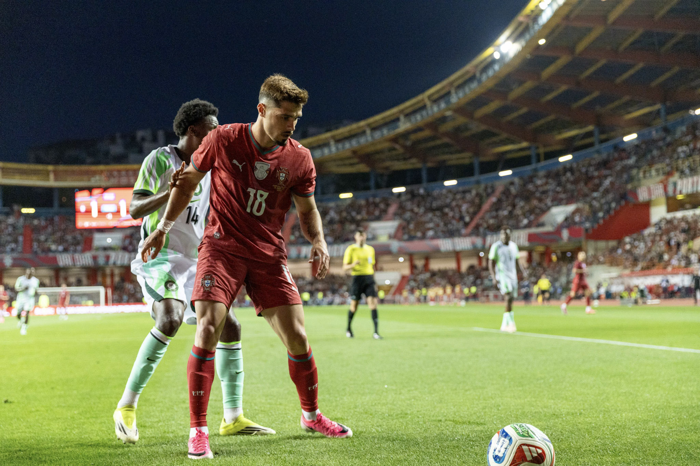
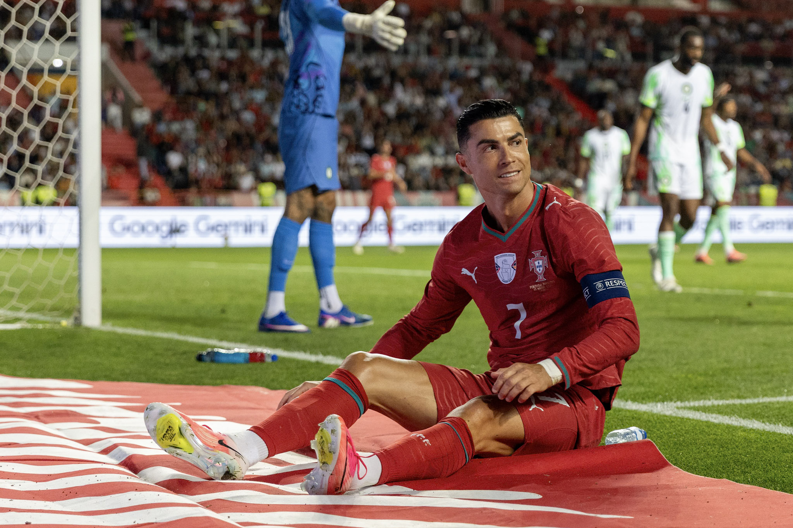

Portugal concluded their preparations for the 2026 FIFA World Cup with a 2–1 victory over Nigeria at Estádio Dr. Magalhães Pessoa in Leiria on Wednesday 10 June 2026.

Pedro Neto opened the scoring in the 23rd minute, finishing a move created by Trincão and Diogo Dalot. Akor Adams equalised for Nigeria in the 37th minute before Francisco Conceição struck Portugal’s winner in the 75th.
Cristiano Ronaldo started as captain and led Portugal’s attack until Gonçalo Ramos replaced him in the 65th minute. Ronaldo threatened the Nigerian goal several times but did not score.

Roberto Martínez made nine changes at half-time as Portugal tested different combinations before travelling to North America. The result completed the national team’s final match rehearsal before their World Cup campaign.
Image Media correspondent Sergio Mendes covered the international friendly and photographed Portugal’s players in Leiria.